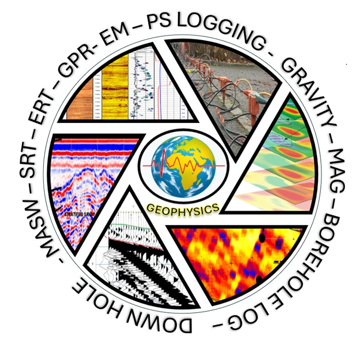

WELCOME TO ShallowGeophysics
At ShallowGeophysics, we specialize in advanced geophysical data processing, delivering accurate and reliable results for your projects.
Explore our comprehensive services, from seismic refraction to borehole resistivity, all tailored to meet your specific needs.
Learn more about our expertise, competitive pricing, and client-centric approach by navigating through our website.